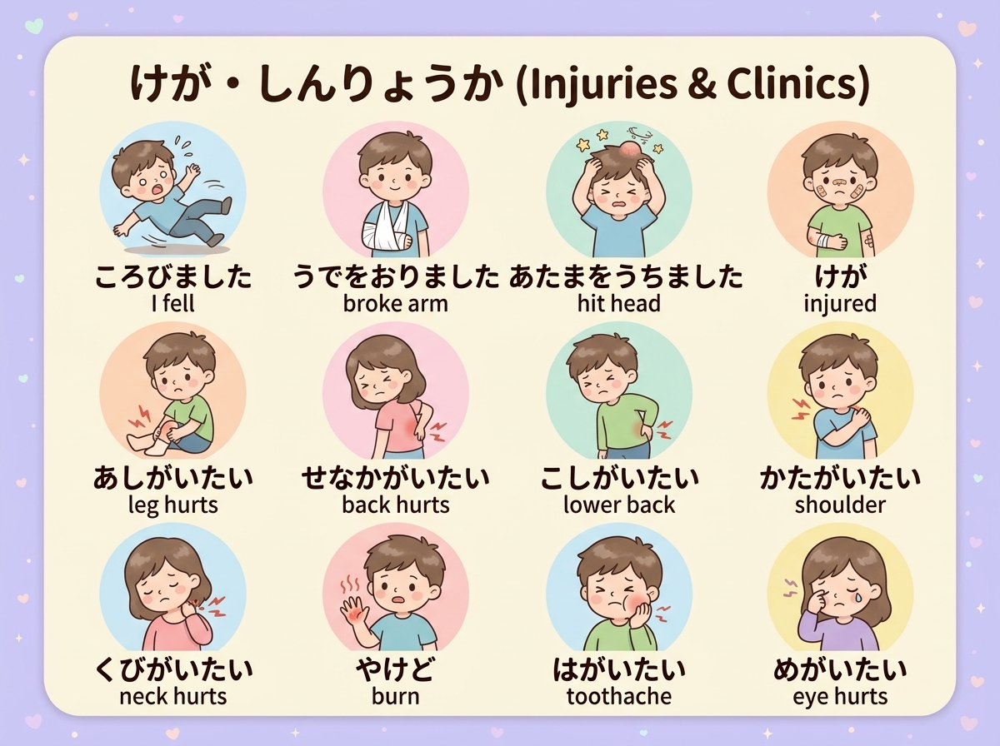

びょういんで つかうことば（②：外科・専門科）
Surgery / Dental / Eye / Skin / ENT / Pediatrics / OB-GYN（p.26）
びょういんで つかうことば（外科・各診療科）
おいしゃさん：どうしましたか？／ どんな ぐあいですか？ ／ かんじゃさん：〇〇しました（ころびました）／ 〇〇です（あしがうごかない）
外科(げか)（Surgery / Orthopedics）・専門科(せんもんか)の 症状(しょうじょう)

そのほかの 診療科(しんりょうか)（押すと音声が出ます🔊）
れんしゅうメモ（げか・せんもんか）
① 。 です。
② に いきます。
26